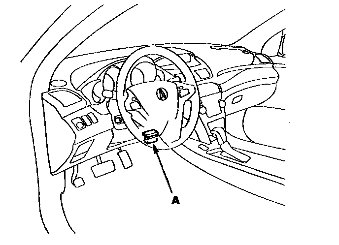
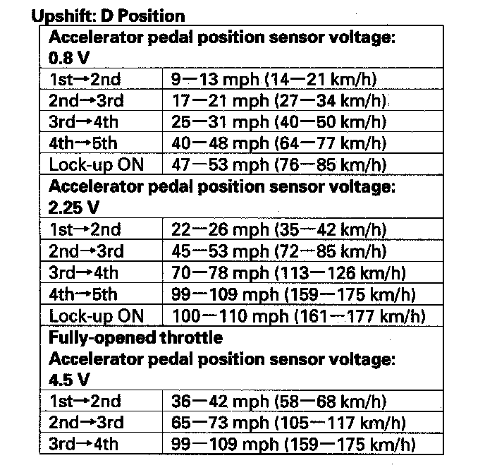
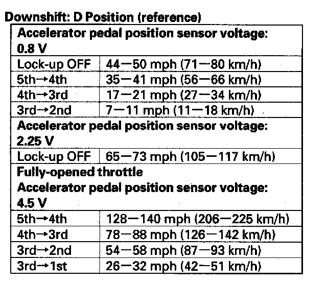

Initial Inspection and Diagnostic Overview
Road Test1. Warm up the engine to normal operating temperature (the radiator fan comes on).
2. Apply the parking brake, and block all four wheels. Start the engine, then shift to the D position while pressing the brake pedal. Press the accelerator pedal, and release it suddenly. The engine should not stall.
3. Repeat step 2 in all shift lever positions.
4. Connect the HDS to the DLC (A), and go to the A/T data list. If the HDS does not communicate with the PCM, troubleshoot the DLC circuit.

5. Prepare the HDS to take a HIGH SPEED SNAPSHOT (refer to the HDS user's guide for more details if needed):
^ Select High Speed icon.
^ Select these parameters:
- VSS veh speed
- Output Shaft (Countershaft) Speed
- Input Shaft (Mainshaft) Speed (rpm) - RPM engine speed
- Relative TP Sensor
- APP Sensor A
- ATF Temp sensor
- Battery voltage
- Shift control
- Brake Switch
^ Set the Trigger Type to Parameter.
^ Adjust the Parameter setting to APP Sensor A above 0.8 V.
^ Set the recording time to 60 seconds.
^ Set the trigger point to -30 seconds.
6. Find a suitable level road. When you are ready to do the test, press OK on the HDS.
7. Monitor the HDS and accelerate quickly until the APP Sensor A reads 0.8 V. Maintain a steady throttle until the transmission shifts to 5th gear, then slow the vehicle and come to a stop.
8. Save the snapshot if the entire event was recorded or increase the recording time setting as necessary and repeat step 7.
9. Adjust the parameter setting to 2.25 V. Test-drive the vehicle again. While monitoring the HDS, accelerate quickly until the APP Sensor A reads 2.25 V. Maintain a steady throttle until the transmission shifts to 5th gear (or reasonable speed) then slow the vehicle and come to a stop.
10. Save the snapshot if the entire event was recorded or increase the recording time setting as necessary and repeat step 9.
11. Accelerate quickly until the accelerator pedal is to the floor. Maintain a steady pedal until the transmission shifts to 3rd gear, then slow to a stop, and save the snapshot.
12. Review each snapshot individually, and compare the Shift Command, the APP Sensor A voltage, and the Vehicle Speed to the table below.


13. Drive the vehicle in 4th or 5th gear in the sequential sportshift mode in the M position, then downshift to 2nd gear. The vehicle should immediately begin to slow down from engine braking.
14. Shift to the R position, accelerate from a stop at full throttle, and check for abnormal noise and clutch slippage.
15. Park the vehicle on a slope (about 16 degrees) apply the brake, and shift into the P position. Release the brake; the vehicle should not move.
NOTE: Always use the brake to hold the vehicle, when stopped on an incline in gear. Depending on the grade of the incline, the vehicle could roll backwards if the brake is released.